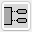
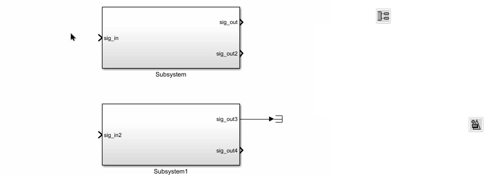
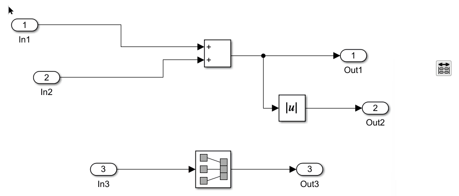
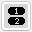
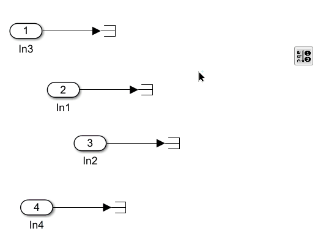
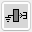
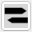
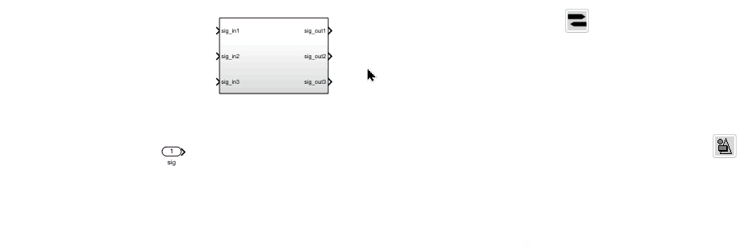
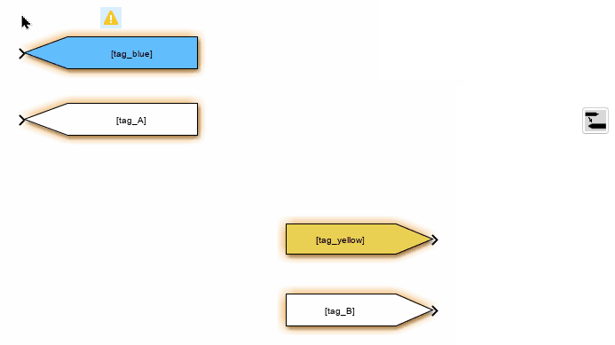

Tool Panel - Signal Routing Blocks
The functions in this section are related to inports, outports, and in/out blocks.
Add In/Out Blocks to Empty Ports

This function adds input and output blocks to the empty ports of the selected blocks. The block format will match the style defined in “Apply Style”.

Align In / Out blocks
This function aligns the selected In/Out blocks to match the position of the ports they are connected to.

Re-number In/Out blocks by alphabet

This function renumbers the selected In/Out blocks in alphabetical order of their signal names.

Add Ground/Terminator to Empty Ports

This function adds a connected Ground block to any empty inport of the selected blocks, or a Terminator block to any empty outport of the selected blocks.
Add Goto/From to Empty Ports

This function adds a connected Goto block to any empty inport of the selected blocks, or a From block to any empty outport. The tag name of the Goto/From block is set to the signal name of the port. The block format follows the style selected in the “Apply Style” function.

Add Matching From/Goto Blocks
For any selected From or Goto block, this function adds a matching Goto or From block to the model. The new block will use the same format as the selected block and will be placed next to it.
